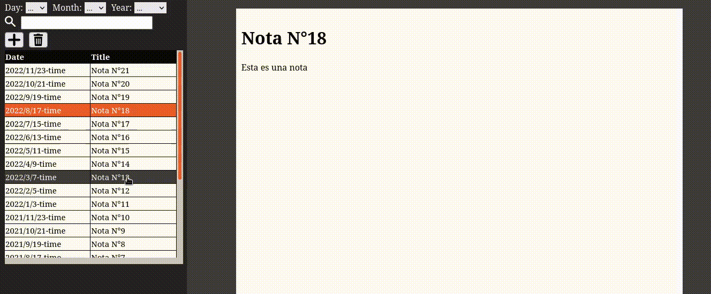

Simple NewsPage
Una aplicacion notepad que realice con angular para terminar de afianzar los conceptos basicos del framework. Esta permite agregar y eliminar notas, mostrarlas a un costado al seleccionarlas de una lista, y filtrar esa misma lista escribiendo en el buscador y/o eligiendo el dia, mes o año en el que fue creada.
Link a repositorio de github